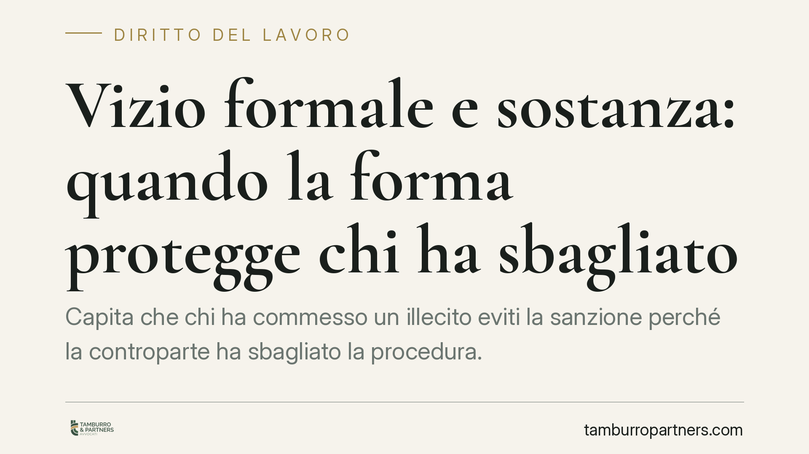

Vizio formale e sostanza: quando la forma protegge chi ha sbagliato
Capita che chi ha commesso un illecito eviti la sanzione perché la controparte ha sbagliato la procedura. Non è un'ingiustizia casuale: è la conseguenza di regole formali poste a tutela del contraddittorio. Analizziamo due terreni ricorrenti, il licenziamento disciplinare e la delibera condominiale, per capire perché la forma pesa quanto il merito.

Il paradosso: torto nel merito, ragione nella forma
Esiste una zona in cui il diritto sembra premiare chi ha sbagliato. Il lavoratore che ha effettivamente commesso una mancanza vince la causa perché la contestazione è arrivata tardi. Il condòmino che avrebbe torto sul contenuto della delibera la fa annullare perché la convocazione era difettosa.
Non si tratta di scappatoie. Le forme procedurali esistono per garantire che chi subisce un provvedimento possa difendersi. Quando la forma manca, viene meno la garanzia, e il provvedimento cade a prescindere dal merito.
Inquadramento normativo
Nel lavoro, l'art. 7 dello Statuto dei lavoratori (legge n. 300/1970) impone che ogni sanzione disciplinare sia preceduta da una contestazione specifica, tempestiva e immutabile. La Cassazione Civile, Sezione Lavoro, ha ribadito che il ritardo nella contestazione — quando ingiustificato — viola il principio di immediatezza e rende illegittima la sanzione, anche se il fatto addebitato è reale. La ratio è chiara: un addebito mosso a distanza di tempo indebolisce la difesa del lavoratore e lascia presumere che il datore abbia tollerato la condotta.
In ambito condominiale, l'art. 66 disp. att. cod. civ. disciplina la convocazione dell'assemblea. L'avviso deve pervenire ad ogni avente diritto almeno cinque giorni prima della data fissata per la prima convocazione, con indicazione degli argomenti all'ordine del giorno. Il difetto o l'omissione della convocazione anche di un solo condòmino rende la delibera annullabile: chi non è stato regolarmente convocato può impugnarla entro trenta giorni, senza dover dimostrare che il suo voto avrebbe cambiato l'esito.
Implicazioni pratiche
Per il datore di lavoro la lezione è diretta: avere ragione sul fatto non basta. Se la procedura disciplinare è viziata — contestazione generica, tardiva, o modificata in corso — il licenziamento o la sanzione possono essere dichiarati illegittimi, con conseguenze economiche rilevanti (indennità, reintegro nei casi previsti).
Per il condòmino e per l'amministratore, una delibera sostanzialmente corretta può essere travolta dalla sola irregolarità della convocazione. Basta un avviso non recapitato, un termine non rispettato, un ordine del giorno incompleto. L'annullamento non richiede la prova che la decisione sarebbe stata diversa: è la regolarità del procedimento a essere tutelata.
Il filo comune è questo: il vizio formale non è un cavillo, ma la sanzione per la violazione di una garanzia di partecipazione e difesa. Chi ha ragione nel merito ma cura male la forma rischia di perdere; chi ha torto nel merito ma intercetta il vizio formale può ribaltare l'esito.
Cosa fare in concreto
- Datori di lavoro: contestate l'addebito appena il fatto è noto e accertato. Redigete la contestazione in modo specifico, indicando date, condotte e circostanze, e non modificate l'addebito in seguito.
- Lavoratori: verificate sempre i tempi e i contenuti della contestazione ricevuta. Annotate la data di conoscenza del fatto da parte del datore: un ritardo ingiustificato può essere decisivo.
- Amministratori di condominio: documentate l'invio dell'avviso a ciascun avente diritto, rispettate il termine dei cinque giorni e inserite un ordine del giorno chiaro e completo. Conservate le prove di ricezione.
- Condòmini: controllate di essere stati convocati regolarmente e nei termini; se intendete impugnare una delibera, agite entro trenta giorni dall'approvazione (o dalla comunicazione, se assenti).
- In ogni caso: prima di avviare o subire un procedimento, fate valutare la regolarità formale degli atti da un professionista. Spesso l'esito si gioca lì.
Una nota di equilibrio
Il sistema non tutela chi ha torto: tutela il metodo con cui si accerta chi ha torto. È una differenza sottile ma sostanziale. La forma non è ostacolo alla giustizia, ma il modo in cui la giustizia si rende verificabile. Trascurarla significa esporsi a un rischio che nulla ha a che vedere con la fondatezza delle proprie ragioni.
Disclaimer
Contributo informativo a cura di Tamburro & Partners - Avv. Giuseppe Tamburro. Non costituisce parere legale.
Ogni storia di lavoro ha i suoi tempi.
Se gestisci HR e vuoi un confronto su contenzioso, ispezioni o licenziamenti, scrivi allo studio. Ti rispondiamo entro un giorno lavorativo.